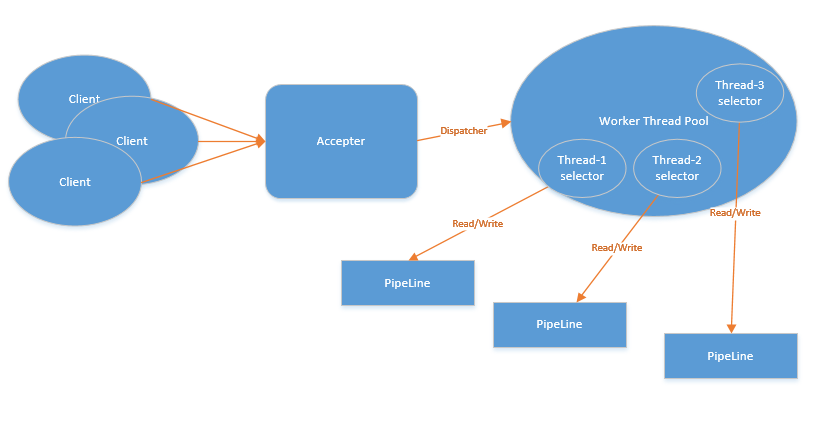
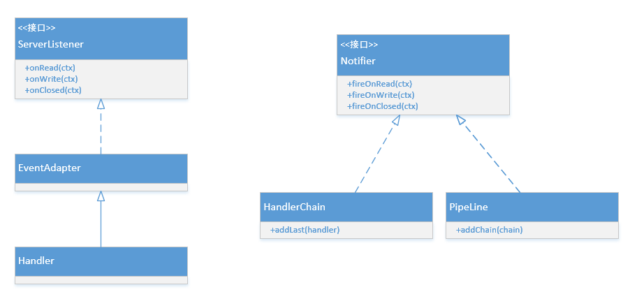
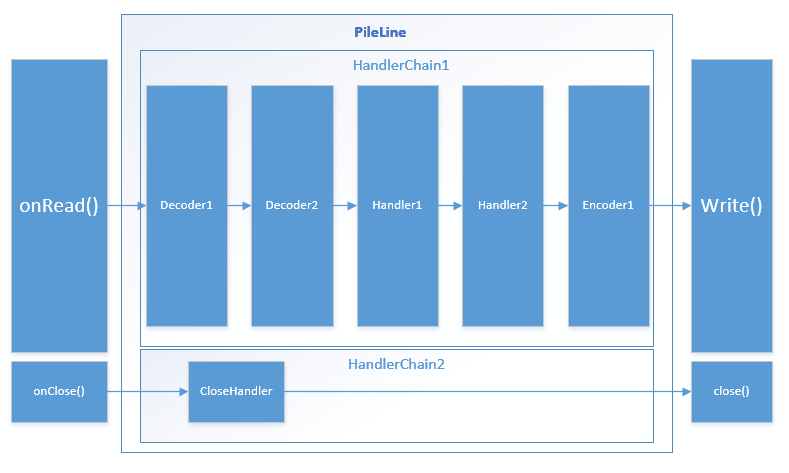

前言
Getty是我为了学习 Java NIO 所写的一个 NIO 框架，实现过程中参考了 Netty 的设计，同时使用 Groovy 来实现。虽然只是玩具，但是麻雀虽小，五脏俱全，在实现过程中，不仅熟悉了 NIO 的使用，还借鉴了很多 Netty 的设计思想，提升了自己的编码和设计能力。
至于为什么用 Groovy 来写，因为我刚学了 Groovy，正好拿来练手，加上 Groovy 是兼容 Java 的，所以只是语法上的差别，底层实现还是基于 Java API的。
Getty 的核心代码行数不超过 500 行，一方面得益于 Groovy 简洁的语法，另一方面是因为我只实现了核心的逻辑，最复杂的其实是解码器实现。脚手架容易搭，摩天大楼哪有那么容易盖，但用来学习 NIO 足以。
线程模型
Getty 使用的是 Reactor 多线程模型

- 有专门一个 NIO 线程- Acceptor 线程用于监听服务端，接收客户端的 TCP 连接请求，然后将连接分配给工作线程，由工作线程来监听读写事件。
- 网络 IO 操作-读/写等由多个工作线程负责，由这些工作线程负责消息的读取、解码、编码和发送。
- 1 个工作线程可以同时处理N条链路，但是 1 个链路只对应 1 个工作线程，防止发生并发操作问题。
事件驱动模型
整个服务端的流程处理，建立于事件机制上。在 [接受连接－＞读－＞业务处理－＞写 －＞关闭连接 ]这个过程中，触发器将触发相应事件，由事件处理器对相应事件分别响应，完成服务器端的业务处理。
事件定义
onRead：当客户端发来数据，并已被工作线程正确读取时，触发该事件 。该事件通知各事件处理器可以对客户端发来的数据进行实际处理了。onWrite：当客户端可以开始接受服务端发送数据时触发该事件，通过该事件，我们可以向客户端发送响应数据。（当前的实现中并未使用写事件）onClosed：当客户端与服务器断开连接时触发该事件。
事件回调机制的实现
在这个模型中，事件采用广播方式，也就是所有注册的事件处理器都能获得事件通知。这样可以将不同性质的业务处理，分别用不同的处理器实现，使每个处理器的功能尽可能单一。
如下图：整个事件模型由监听器、事件适配器、事件触发器（HandlerChain，PipeLine）、事件处理器组成。

ServerListener：这是一个事件接口，定义需监听的服务器事件interface ServerListener extends Serializable{ /**
* 可读事件回调
* @param request
*/
void onRead(ctx)
/**
* 可写事件回调
* @param request
* @param response
*/
void onWrite(ctx)
/**
* 连接关闭回调
* @param request
*/
void onClosed(ctx)
}EventAdapter：对 Serverlistener 接口实现一个适配器 (EventAdapter)，这样的好处是最终的事件处理器可以只处理所关心的事件。class EventAdapter implements ServerListener { //下个处理器的引用
protected next
void onRead(Object ctx) {
}
void onWrite(Object ctx) {
}
void onClosed(Object ctx) {
}
}Notifier：用于在适当的时候通过触发服务器事件，通知在册的事件处理器对事件做出响应。interface Notifier extends Serializable{ /**
* 触发所有可读事件回调
*/
void fireOnRead(ctx)
/**
* 触发所有可写事件回调
*/
void fireOnWrite(ctx)
/**
* 触发所有连接关闭事件回调
*/
void fireOnClosed(ctx)
}HandlerChain：实现了Notifier接口，维持有序的事件处理器链条，每次从第一个处理器开始触发。class HandlerChain implements Notifier{ EventAdapter head
EventAdapter tail
/**
* 添加处理器到执行链的最后
* @param handler
*/
void addLast(handler) {
if (tail != null) {
tail.next = handler
tail = tail.next
} else {
head = handler
tail = head
}
}
void fireOnRead(ctx) {
head.onRead(ctx)
}
void fireOnWrite(ctx) {
head.onWrite(ctx)
}
void fireOnClosed(ctx) {
head.onClosed(ctx)
}
}PipeLine：实现了Notifier接口，作为事件总线，维持一个事件链的列表。class PipeLine implements Notifier{ static logger = LoggerFactory.getLogger(PipeLine.name)
//监听器队列
def listOfChain = []
PipeLine(){}
/**
* 添加监听器到监听队列中
* @param chain
*/
void addChain(chain) {
synchronized (listOfChain) {
if (!listOfChain.contains(chain)) {
listOfChain.add(chain)
}
}
}
/**
* 触发所有可读事件回调
*/
void fireOnRead(ctx) {
logger.debug("fireOnRead")
listOfChain.each { chain ->
chain.fireOnRead(ctx)
}
}
/**
* 触发所有可写事件回调
*/
void fireOnWrite(ctx) {
listOfChain.each { chain ->
chain.fireOnWrite(ctx)
}
}
/**
* 触发所有连接关闭事件回调
*/
void fireOnClosed(ctx) {
listOfChain.each { chain ->
chain.fireOnClosed(ctx)
}
}
}
事件处理流程

事件处理采用职责链模式，每个处理器处理完数据之后会决定是否继续执行下一个处理器。如果处理器不将任务交给线程池处理，那么整个处理流程都在同一个线程中处理。而且每个连接都有单独的PipeLine，工作线程可以在多个连接上下文切换，但是一个连接上下文只会被一个线程处理。
核心类
ConnectionCtx
连接上下文ConnectionCtx
class ConnectionCtx {
/**socket连接*/
SocketChannel channel
/**用于携带额外参数*/
Object attachment
/**处理当前连接的工作线程*/
Worker worker
/**连接超时时间*/
Long timeout
/**每个连接拥有自己的pipeline*/
PipeLine pipeLine
}
NioServer
主线程负责监听端口，持有工作线程的引用（使用轮转法分配连接），每次有连接到来时，将连接放入工作线程的连接队列，并唤醒线程selector.wakeup()（线程可能阻塞在selector上）。
class NioServer extends Thread {
/**服务端的套接字通道*/
ServerSocketChannel ssc
/**选择器*/
Selector selector
/**事件总线*/
PipeLine pipeLine
/**工作线程列表*/
def workers = []
/**当前工作线程索引*/
int index
}
Worker
工作线程，负责注册server传递过来的socket连接。主要监听读事件，管理socket，处理写操作。
class Worker extends Thread {
/**选择器*/
Selector selector
/**读缓冲区*/
ByteBuffer buffer
/**主线程分配的连接队列*/
def queue = []
/**存储按超时时间从小到大的连接*/
TreeMap<Long, ConnectionCtx> ctxTreeMap
void run() {
while (true) {
selector.select()
//注册主线程发送过来的连接
registerCtx()
//关闭超时的连接
closeTimeoutCtx()
//处理事件
dispatchEvent()
}
}
}
运行一个简单的 Web 服务器
我实现了一系列处理HTTP请求的处理器，具体实现看代码。
LineBasedDecoder：行解码器，按行解析数据HttpRequestDecoder：HTTP请求解析，目前只支持GET请求HttpRequestHandler：Http 请求处理器，目前只支持GET方法HttpResponseHandler：Http响应处理器
下面是写在test中的例子
class WebServerTest {
static void main(args) {
def pipeLine = new PipeLine()
def readChain = new HandlerChain()
readChain.addLast(new LineBasedDecoder())
readChain.addLast(new HttpRequestDecoder())
readChain.addLast(new HttpRequestHandler())
readChain.addLast(new HttpResponseHandler())
def closeChain = new HandlerChain()
closeChain.addLast(new ClosedHandler())
pipeLine.addChain(readChain)
pipeLine.addChain(closeChain)
NioServer nioServer = new NioServer(pipeLine)
nioServer.start()
}
}
另外，还可以使用配置文件getty.properties设置程序的运行参数。
#用于拼接消息时使用的二进制数组的缓存区
common_buffer_size=1024
#工作线程读取tcp数据的缓存大小
worker_rcv_buffer_size=1024
#监听的端口
port=4399
#工作线程的数量
worker_num=1
#连接超时自动断开时间
timeout=900
#根目录
root=.
总结
Getty是我造的第二个小轮子，第一个是RedisHttpSession。都说不要重复造轮子。这话我是认同的，但是掌握一门技术最好的方法就是实践，在没有合适项目可以使用新技术的时候，造一个简单的轮子是不错的实践手段。
Getty 的缺点或者说还可以优化的点：
- 线程的使用直接用了
Thread类，看起来有点low。等以后水平提升了再来抽象一下。 - 目前只有读事件是异步的，写事件是同步的。未来将写事件也改为异步的。